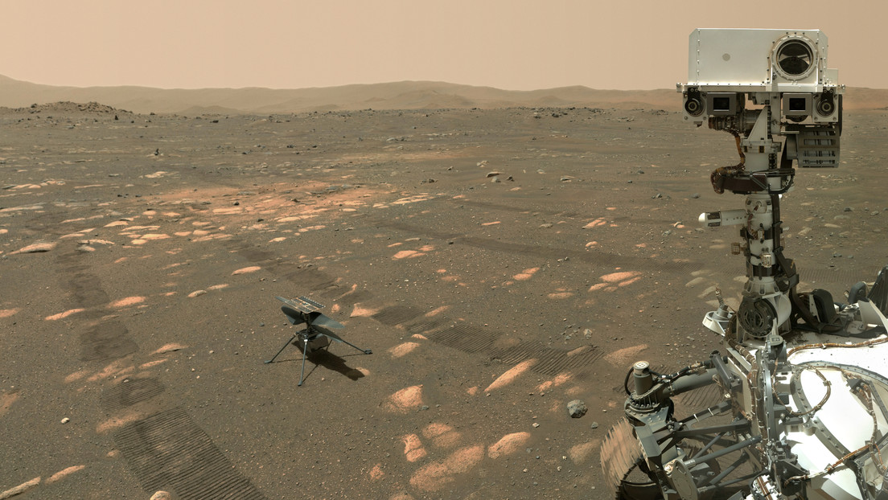
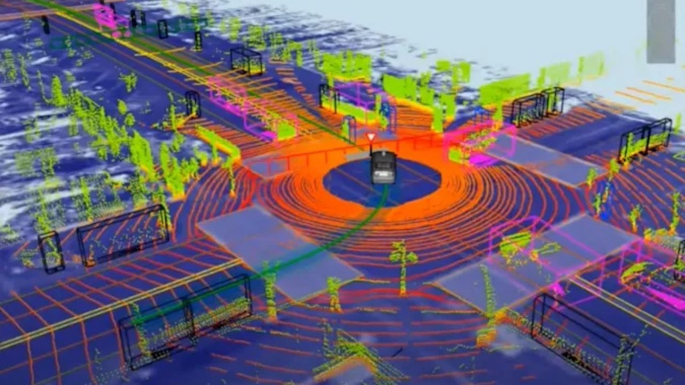

El rover Perseverance de la NASA tomó 62 imágenes para su icónica selfie con Ingenuity
Hasta que un robot necesita mucho trabajo para tomar una foto de sí mismo.
En abril, el rover Ingenuity de la NASA capturó la imaginación del mundo cuando envió una selfie épica que tomó con Ingenuity en la superficie de Marte . Resulta que capturar esa foto no fue tan fácil como Perseverance posar, tomar una sola foto y terminarlo. Según un nuevo video que la NASA publicó el viernes , lo que pudimos ver aquí en la Tierra fue el resultado de 62 imágenes separadas que la agencia unió.
Según lo cuenta la NASA, el proceso fue complicado y llevó mucho tiempo. Involucró a una docena de expertos, incluida una variedad de ingenieros, para llevar a cabo todo, y aproximadamente una semana para trazar todos los comandos que tenían que enviar a Perseverance para que se realizara el disparo final. La razón por la que se necesitaron 62 imágenes para producir la foto final fue porque la NASA usó la cámara WATSON de Perseverance para la composición. El instrumento fue diseñado principalmente para tomar imágenes de rocas en primer plano, no tomas de gran angular expansivas. Dado que WATSON está montado en el brazo robótico de Perseverance, la NASA también tuvo que tener cuidado de que el apéndice no chocara con el rover mientras colocaba la cámara.
Con ese fin, los ingenieros de la NASA desarrollaron un software que les permitió simular cada movimiento del brazo para poder acercarlo lo más posible al rover sin dañarlo. También realizaron simulaciones para descubrir cómo colocar Ingenuity en la composición. “Lo que llamó más la atención fue llevar a Ingenuity al lugar correcto en la selfie”, dijo Mike Ravine de Malin Space Science System (MSSS), que construyó la cámara que la NASA usó para capturar la selfie. "Dado lo pequeño que es, pensé que hicimos un buen trabajo".
Una vez que la NASA tuvo todas las imágenes que necesitaba para la selfie, los ingenieros de MSSS limpiaron cada una de ellas para eliminar las imperfecciones dejadas por el polvo que se había asentado en el detector de luz de WATSON. Luego los cosieron en un mosaico antes de recortar y deformar esa imagen en la que todos conocemos y amamos hoy.

La supercomputadora 'Dojo' de Tesla entrenará su tecnología autónoma centrada en la visión
Hasta que un robot necesita mucho trabajo para tomar una foto de sí mismo.
Tesla ha apostado por la conducción autónoma de solo visión, hasta el punto de incluso eliminar gradualmente los sensores de radar en algunos de sus vehículos eléctricos. Ahora, en un taller de CVPR 2021, el director senior de inteligencia artificial de Tesla, Andrej Karpathy, ha explicado cómo planea hacer esto mediante el uso de una supercomputadora interna llamada "Dojo", como informó TechCrunch .
Karparthy explicó que con la tecnología de solo visión, las computadoras deben responder a nuevos entornos con la misma velocidad y agudeza que un humano. Sin embargo, hacer eso requiere entrenamiento de IA en un conjunto de datos masivo con una poderosa supercomputadora para procesarlo. Tesla tiene uno de esos en casa con "Dojo", un modelo de próxima generación con 1.8 exaflops de rendimiento y 10 petabytes de almacenamiento NVME funcionando a 1.6 terabytes por segundo.
Si bien el sistema no ha sido evaluado, Karparthy cree que sería uno de los más rápidos del mundo. "Si tomas el número total de FLOPS, de hecho se ubicaría alrededor del quinto lugar", dijo Karpathy a TechCrunch . "El quinto lugar lo ocupa actualmente NVIDIA con su clúster Selene, que tiene una arquitectura muy comparable y un número similar de GPU. "
Para entrenar el sistema, la supercomputadora de Tesla recopila video de ocho cámaras en vehículos Tesla, cada una de las cuales funciona a 36 cuadros por segundo. Si bien eso genera una gran cantidad de datos, es más escalable que crear y mantener mapas de alta definición en todo el mundo. Sin embargo, también requiere un procesamiento casi instantáneo, que debe tratarse como un problema de aprendizaje supervisado.
Hasta ahora, el sistema funciona bien en áreas escasamente pobladas, donde los automóviles pueden circular sin intervención. Sin embargo, Tesla ha descubierto (como todas las demás empresas de vehículos autónomos) que navegar por áreas densamente pobladas es mucho más difícil. Aún así, Karpathy dijo que la computadora de Tesla ha podido manejar nuevos tipos de advertencias de tráfico, detecciones de colisiones de peatones y aplicaciones incorrectas de los pedales, esto último ocurre cuando un conductor presiona accidentalmente el acelerador en lugar de los frenos.